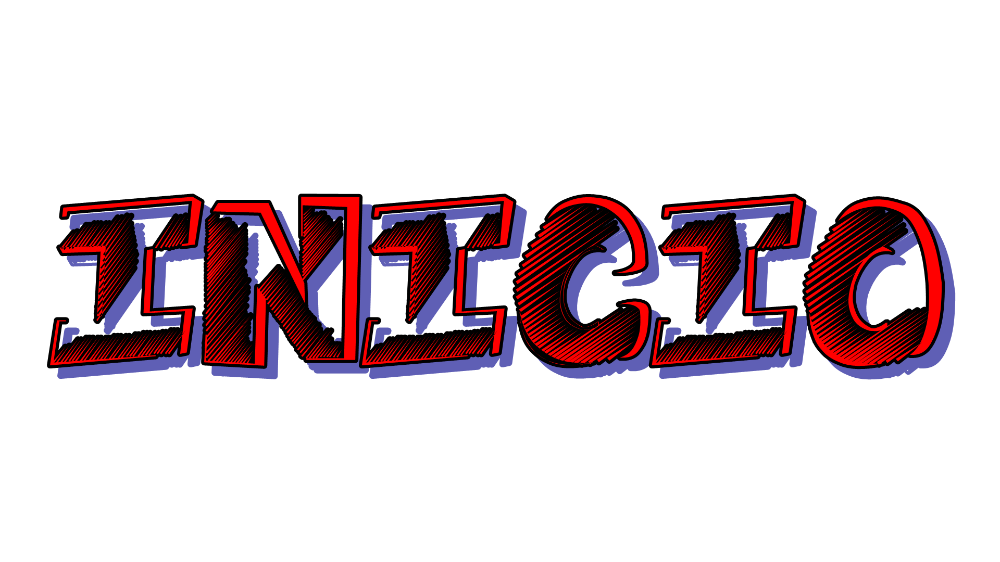

|  |  |
 |
 |
|---|
Seu enigma será: Sou além do que você pode entender, essa provavelmente a Primeira vez que apareço, por isso quero causar
uma boa primeira impressão sou além de um lugar só mas todos me completam, o iDIOMA é uma barreira a ser quebrada, se você é esperto decifre-me se for capaz!
Decifre-me: Come għal oder μπλοκ za тэмдэглэл
Dica: Não confie só em seu idioma!
Dica extra: Primeiras letras